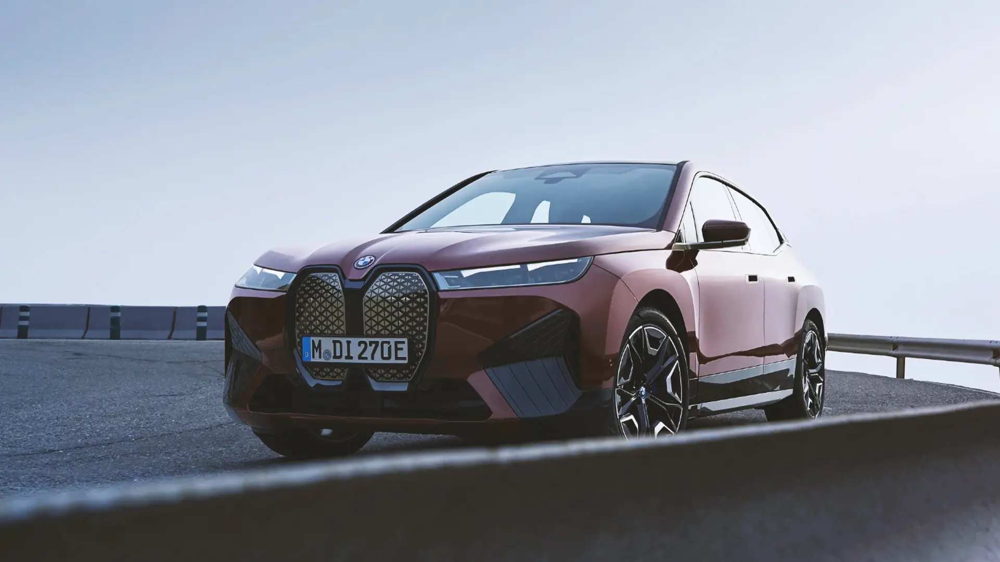
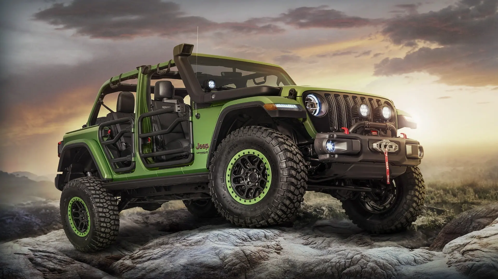
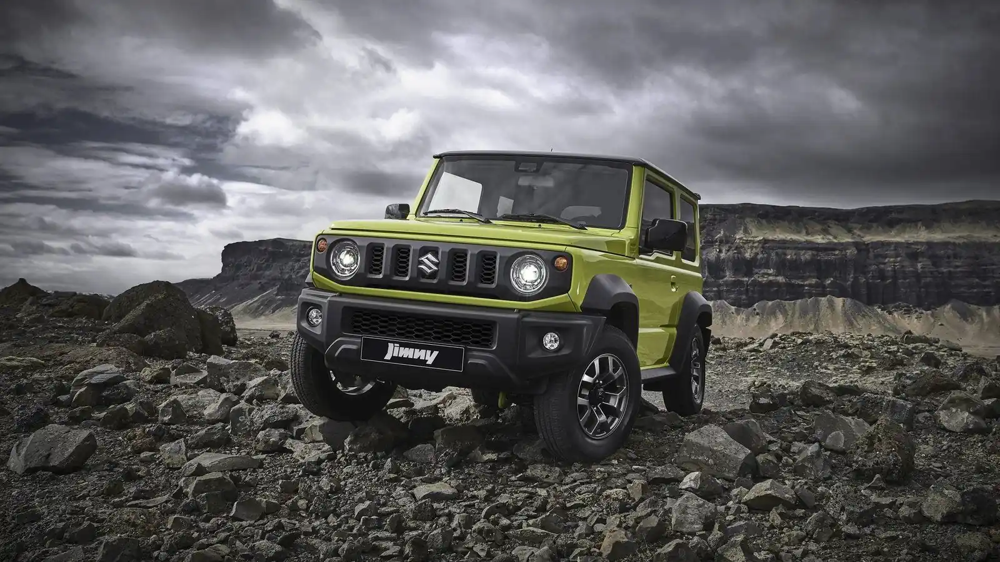

bmw
bmw xm

bmw ix

bmw ix m60
bmw i4

bmw m2
bmw m4 csl
jeep
jeep Gladiator
jeep Renegade
jeep compass
jeep cherokee
jeep wrangler

jeep wrangler 4ex
hyundai
HYUNDAI ELANTRA
HYUNDAI TUCSON
HYUNDAI ACCENT
HYUNDAI STAREX
HYUNDAI AURA
HYUNDAI ALCAZAR
kia
KIA SPOTAGE

KIA SORENTO
KIA CARNIVAL

KIA PICANTO

KIA SPECTRA

KIA OPTIMA HYBRID
audi

AUDI E-TRON GT

AUDI A5 SPORTBACK

AUDI QUATTRO

AUDI R8 SPYDER

AUDI A4

AUDI RS5
suzuki
SUZUKI SWIFT

SUZUKI JIMNY
SUZUKI VITARA
MARUTI SUZUKI DZIRE
MARUTI SUZUKI BREZZA
MARUTI SUZUKI ALTO K10